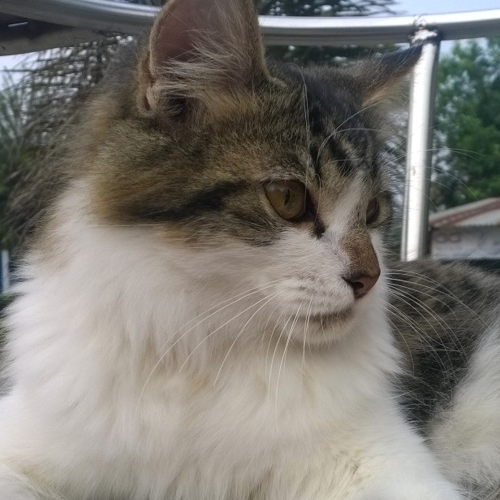

Tentang Saya
Saat ini, saya bekerja sebagai Software Engineer di Tokopedia, perusahaan internet nomor 1 di Indonesia.
Saya lahir dan tumbuh besar di Palembang, Sumatera Selatan. Saya lahir tanggal 23 Maret, tanggal yang sama dengan tanggal kelahiran Kak Tyas (ketika ini ditulis, beliau adalah Chief of People Function-nya Tokopedia). Tapi tahun kelahiran kami berbeda. Kak Tyas lebih tua daripada saya, karena itu beliau saya panggil Kak. Saya sengaja tulis tanggal lahir supaya diingat oleh kalian yang baca dan supaya kalian ngasih kue dan kado ke kami.
Saya alumni jurusan Teknik Informatika Universitas Sriwijaya. Setelah saya lulus, saya langsung bekerja di Tokopedia. Saya sangat senang bekerja di sini, selain karena semua karyawan di sini hebat-hebat juga karena gajinya lumayan. Maaf, saya gak boleh ngasih tau gaji saya berapa karena dilarang oleh Kak Tyas (dan perusahaan).
Saya suka warna biru. Karena itu saya suka langit dan laut. Saya juga suka kucing, walau kucingnya sering gak suka saya. Saya sering tidak mengerti dengan apa yang dipikirkan oleh kucing. Tapi ya sudahlah, namanya juga kucing.
Saya di langit; saya di laut; dan kucing jantan saya, Beauty.
Tentang Saya dan Tokopedia
Tokopedia, membangun Indonesia lebih baik lewat internet.
Saya percaya dengan visi Tokopedia di atas. Selama saya bekerja di Tokopedia, saya sudah menyaksikan sendiri, bagaimana Tokopedia bisa membantu menciptakan peluang untuk jutaan rakyat Indonesia.
Saya mulai bekerja di Tokopedia sejak tanggal 14 Desember 2015. Di Tokopedia, kami memanggil rekan kerja kami dengan panggilan Nakama yang memiliki arti lebih dari sekedar sahabat.
Sehari-harinya, saya bertanggung jawab untuk mengembangkan dan memelihara sistem pembayaran Tokopedia, yang kami beri nama Tokopedia Payment Network. Tentu saja saya tidak bekerja sendirian. Saya bekerja bersama orang-orang terbaik dan bisa diandalkan. Mereka adalah Alvin, Aliyyil, Ko Alan, Kak Indri, Laras, Elvira, Bagus dan Yose.
The Best Team I Ever Had.
Tentang Coding Class
Banyak hal yang menginspirasi saya untuk memulai Coding Class. Mulai dari seorang Office Boy di suatu startup yang diajarin coding langsung oleh CTO-nya, buruh angkut yang akhirnya sukses menjadi game developer, serta Presiden Obama dan Perdana Menteri Singapura yang sangat mendukung pelajaran pemrograman di sekolah.
Akhirnya, pada bulan Mei saya menghubungi Wiji untuk menyampaikan ide ini. Gayung pun bersambut. People function sangat support. Dengan bantuan Wiji, Jho, dan Kak Tyas akhirnya Coding Class bisa dimulai.
Saya juga menyampikan ide ini ke salah satu Nakama saya, Hasta. Dia pun mau membantu untuk kesuksesan kelas ini. Seiring waktu, Ryan dan Ali pun bergabung untuk menyukseskan kelas ini. Saya senang sekali!
Apa sih manfaat dari ikutan coding class? Banyak banget. Dengan kamu bisa ngoding, kemampuan berpikir dan problem solving kamu akan meningkat. Kamu juga bisa tau bagaimana internet, web, dan Tokopedia bisa bekerja. Kalau misalnya ada bugs di Tokopedia, bisa jadi kamu nanti yang akan solve bugs tersebut!
Bagi perusahaan internet, coding adalah hal wajib yang harus dimiliki oleh karyawan IT-nya. Iya, karyawan IT. Namun, bayangkan bila seluruh Nakama Tokopedia bisa coding... menjadi perusahaan internet nomor 1 di dunia pasti bisa menjadi kenyataan!